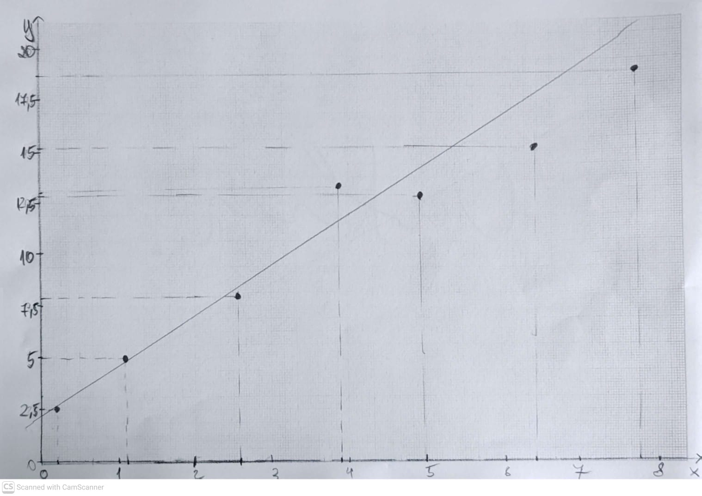
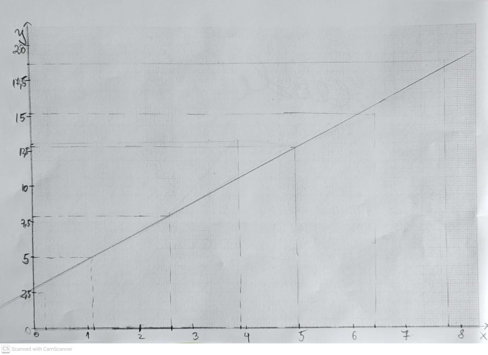
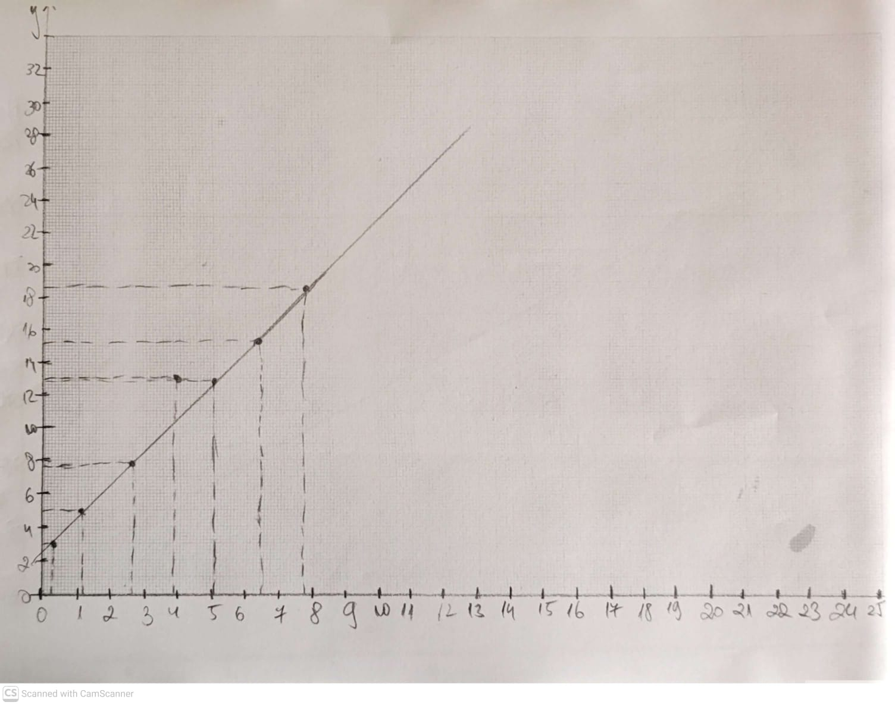
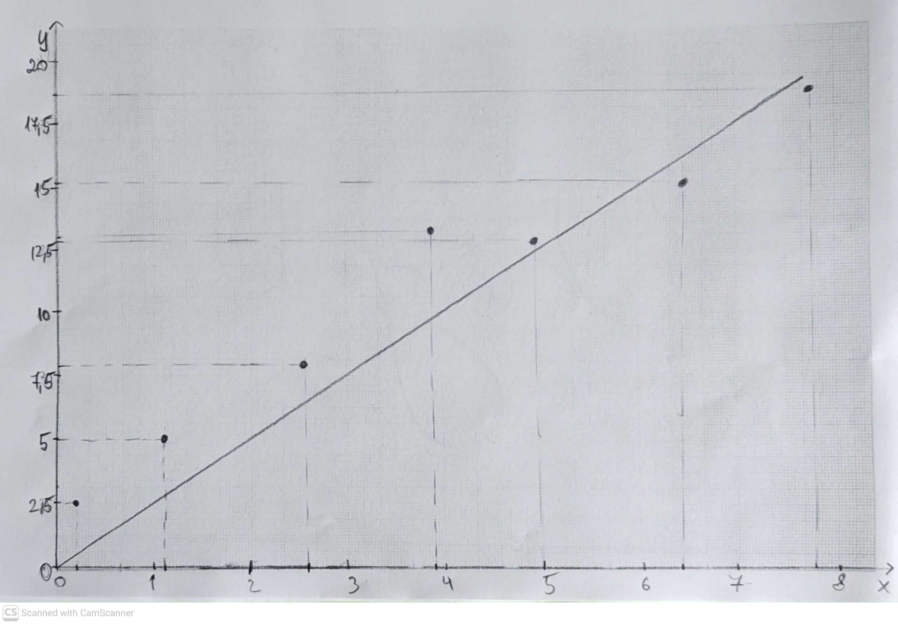
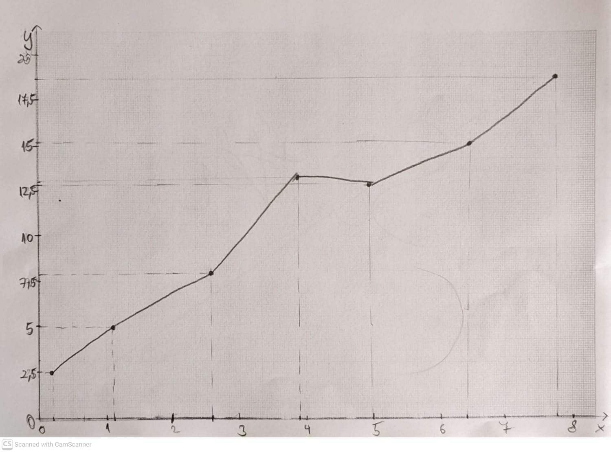
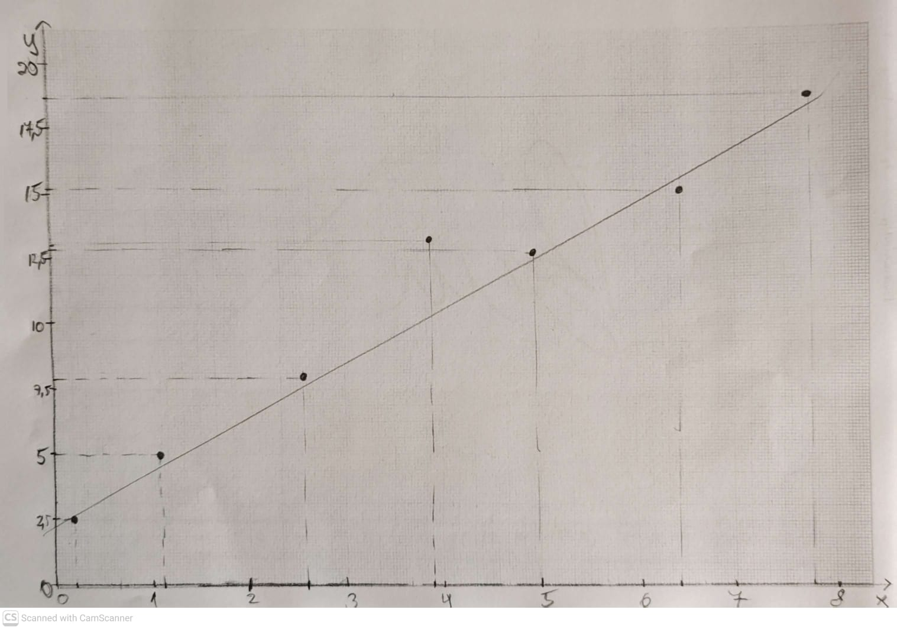

Why Graphs Matter
Graphs help visualize data, reveal relationships between variables, and allow you to quickly analyze trends, slopes, and intercepts.
Types of Graphs
- Line Graphs: Show continuous relationships between variables.
- Bar Graphs: Compare discrete categories.
- Scatter Plots: Display correlation between two variables.
- Histograms: Show frequency distributions.
Axes and Scales
- Always label axes with variable name and units.
- Use linear or logarithmic scales as appropriate.
- Ensure consistent spacing; avoid distorted scales.
- Start the axis at zero unless scientifically justified.
Plotting Points
- Accurately mark each point based on measured data.
- Use small dots or circles for points.
- Include error bars to indicate measurement uncertainty.
Reading Slopes and Intercepts
- For a linear relationship of the form \( y = ax + b \), the slope of the graph represents the constant \( a \).
- The intercept \( b \) is the value of \( y \) when \( x = 0 \), and should only be interpreted if it has physical meaning.
- The slope is calculated as \( \Delta y / \Delta x \) using two well-separated points on the best-fit line.
- Even when a physical relationship is not linear, it can often be linearized (for example by plotting \( T^2 \) vs \( L \), or \( \ln y \) vs \( \ln x \)) so that the slope still represents a meaningful physical constant.
Best Fit Lines
- Draw a line as close as possible to all points.
- Do not force it through the origin unless justified.
- Balance points above and below the line to avoid bias.
Graphing Errors and Uncertainty
- Include error bars for each data point.
- Propagate uncertainties when calculating slopes or constants.
- Consider how scatter affects accuracy of slopes/intercepts.
Olympiad-Specific Rules
- Axes must be clearly labeled with units.
- Maintain proper significant figures.
- Points must be plotted accurately; avoid premature rounding.
- Draw lines neatly; messy graphs can lose points.
Tips & Tricks
- Use a ruler for straight lines.
- Keep spacing proportional to the scale.
- Annotate slopes and intercepts if needed.
- Check graphs against raw data for consistency.
Common Graphing Mistakes
Below are six example graphs. Five contain common but serious mistakes that frequently cost marks in practical exams. Only one graph is fully correct.

❌ Mistake 1: Abnormal Point Not Excluded
An obvious anomalous point is included in the analysis without justification. Outliers caused by experimental error should be identified and excluded with reasoning, otherwise the slope becomes inaccurate.

❌ Mistake 2: Points Not Clearly Marked
Data points are too small or faint to be seen clearly. Points must be plotted using visible dots or circles so the examiner can clearly verify accuracy.

❌ Mistake 3: Poor Use of Graph Paper
The graph occupies only a small portion of the available space. You should always scale axes so the data uses most of the graph paper to reduce uncertainty.

❌ Mistake 4: Forcing the Line Through the Origin
The best-fit line is forced through the origin even though the data does not justify it. A line should only pass through the origin if the physics demands it.

❌ Mistake 5: Joining Points Instead of Best-Fit Line
Lines are drawn point-to-point rather than drawing a single best-fit line. This ignores experimental uncertainty and is incorrect for continuous relationships.

✅ Correct Graph
Points are clearly marked, anomalous data is treated correctly, the graph uses most of the available space, and a proper best-fit line is drawn without unjustified assumptions.